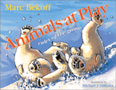

<body bgcolor="#FFFFFF" text="#000000" link="#0000FF" vlink="#CC0000" alink="#CC0000"><center><hr width="350" size="1" align="center" noshade>What can we learn from watching animals play?<hr width="350" size="1" align="center" noshade><p><a href="https://cdcshoppingcart.uchicago.edu/Cart/ChicagoBook.aspx?ISBN=9781592135516&&PRESS=temple" target="_top">Buy this book!</a> | <a href="https://cdcshoppingcart.uchicago.edu/Cart/Cart.aspx?PRESS=temple" target="_top">View Cart</a> | <a href="https://cdcshoppingcart.uchicago.edu/Cart/Cart.aspx?PRESS=temple" target="_top">Check Out</a></p><p></p></center><!--none//--><h1>Animals at Play</h1>
<H2>Rules of the Game</H2>
<H2>Illustrations by Michael J. DiMotta</H2>
<h3>Marc Bekoff</h3>
<P>cloth 1-59213-551-X $18.95, Sep 08, <FONT COLOR=#990033>Available</FONT>
<br>Electronic Book 1-59213-553-6 $18.95 <FONT COLOR=#990033>Available</FONT>
<BR> 32 pp
9x7
24&nbsp;color&nbsp;illustrations
</P><h3 align="center"><P><font color="#996633">Outstanding Children's Book Award, <i>Animal Behavior Society</i>,
2009</font></P>
</H3>
<BLOCKQUOTE><I>“Marc Bekoff’s ideas about fair play stress the significance of cooperation and justice, aspects of behavior desperately needed in the world today...Read this book, share it with the children in your life, and incorporate its lessons into your classroom, family room or Board room.”</I>
<BR>&#151<B>Jane Goodall, PhD</b>, DBE, UN Messenger of Peace <a href="http://www.janegoodall.org" target="new"> www.janegoodall.org</a><i></I></BLOCKQUOTE>
<P>Dogs chase each other and wrestle. Cats pounce and bite. These animals may look like they are fighting, but if you pay close attention— as world-renowned biologist Marc Bekoff does—you can see they are playing and learning the rules of their games. In <I>Animals at Play</I>, Bekoff shows us how animals behave when they play, with full-color illustrations showing animals in action and having fun—from squirrels climbing up a tree to polar bears somersaulting in the snow.</P>
<P>Bekoff emphasizes how animals communicate, cooperate and learn to play fair and what happens when they break the rules. He uses lively illustrations and simple explanations of what it means when a sea lion swims with kelp in its mouth or when two dogs bow to each other. Bekoff also describes what happens when animals become too aggressive and how they apologize, forgive and learn to trust one another. This entertaining and informative book will delight every child and show readers how animals—and humans—interact when they are having fun.</P>
<BR>&nbsp;<h2>Reviews</h2>
<p><i>"[A] delightful book for young people."</i><br>&#151<b> <i>ENCOUNTER: Education for Meaning and Social Justice</i></b>
<p><i>"Bekoff, an ethologist who sometimes teams with Jane Goodall, and whose work is becoming a national treasure of insight and activism, writes frequently about animal emotion. Here he showcases a behavior all kids resonate with: play. There’s good science conveyed here.... Bekoff probes the play of different species, and DiMotta’s illustrations enliven the words.... [W]hat better foundation for kids’ kindness to animals than knowledge of those animals in all their joy and sorrow and smartness? The playing animals in this book apologize to each other when things get too rough, and shun those who lie. Kids will relate." </i><br>&#151<b><i>Bookslut</i></b>
<p><i>"Bekoff gives a nice overview of all types of play, but with the underlying message that it’s a fun, universal part of life for all mammals. He even spends a few pages discussing the motivations for adults or older siblings in playing with younger animals, which might involve role reversal (whereby an adult gives a child the chance to be more powerful) or self-handicapping (e.g., holding back from using full strength). With lovely illustrations by Michael J. DiMotta, this book makes for a wonderful introduction to the world of animal cognition, ethology, and the rules of playing fair. I can’t recommend it enough!"</i><br>&#151<b> <i>Vegbooks</i></b>
<BR>&nbsp;<H2>About the Author(s)</H2>
<table><tr><td valign="top"><img src="/tempress/authors/1913_au.gif" height="90" width="75"></td><td width="100%" valign="middle"><p><b>Marc Bekoff</b> (University of Colorado) is an ethologist and well-published author (including <i>Ranger Rick</i>) who travels the world speaking about animals and working with children. He co-founded Ethologists for the Ethical Treatment of Animals (<a href="http://www.ethologicalethics.org" target="new">www.ethologicalethics.org</a>) with Jane Goodall, and working with her Roots & Shoots program, he teaches students about animals.</P></td></tr></table>
<BR><H2>Subject Categories</H2>
<p><A HREF="/tempress/animal_soc.html" TARGET="_top">Animals and Society</a>
<BR><A HREF="/tempress/general.html" TARGET="_top">General Interest</a>
<BR><A HREF="/tempress/education.html" TARGET="_top">Education</a>
</p>
<BR><h2 class="inpageheading">In the series</H2>
<P><I><a href="http://www.temple.edu/tempress/animal_ethics.html" onMouseOver="window.status='Click for other books in this series!'; return true;" onMouseOut="window.status=''; return true;" target="_top">Animals and Ethics</a></i>, edited by Marc Bekoff.
</p><p>Building on the idea that human and non-human animals share a common environment, the <i>Animals and Ethics</i> series will produce a wide range of books that explain animal behavior, show how humans’ decisions and dispersal around the planet affect animals’ interests and experience, and propose practical solutions to the ethical problems that arise from human effects on our world. The books will be rooted in the natural and social sciences, but the authors--mostly scientists, social scientists and philosophers—will write for a broad audience, including children.</p>
<p align="center"><a href="https://cdcshoppingcart.uchicago.edu/Cart/ChicagoBook.aspx?ISBN=9781592135516&&PRESS=temple" target="_top">Buy this book!</a> | <a href="https://cdcshoppingcart.uchicago.edu/Cart/Cart.aspx?PRESS=temple" target="_top">View Cart</a> | <a href="https://cdcshoppingcart.uchicago.edu/Cart/Cart.aspx?PRESS=temple" target="_top">Check Out</a></p><p><font face="Arial" size="1"><a href="copyright.html" onMouseOver="window.status='Web Copyright Policy';return true;" onMouseOut="window.status=''" title="Web Copyright Policy">&copy;</a> 2015 <a href="http://www.temple.edu" target="new" onMouseOver="window.status='Link to Temple University home page';return true;" onMouseOut="window.status=''" title="Link to Temple University home page">Temple University</a>. All Rights Reserved. http://www.temple.edu/tempress/titles/1913_reg.html</font></p>